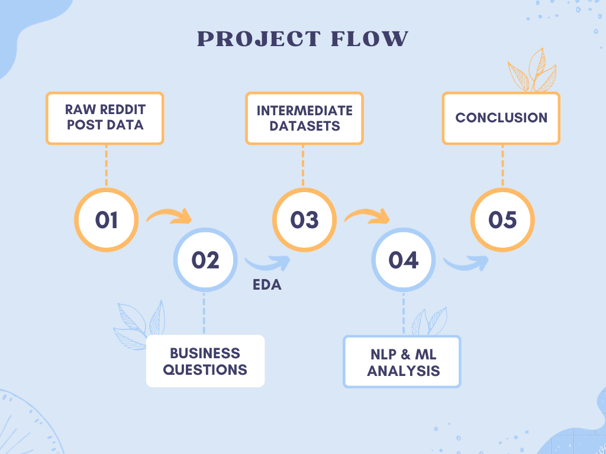

A Data Analysis of Reddit User Behavior
Milestone Pages
Introduction
Since the invention of the internet, the interpersonal exchange of information has been unprecedently convenient, for which Reddit is definitely a typical representation, as one of the biggest and most popular online forums on the internet. By simply clicking into a SubReddit of it, you could observe people posting their opinions and giving comments, thumbing up or down, adding SubReddit-specific tags on their posts, and even offering a generous gild to words helpful for them…
However, we are never satisfied by such a glimpse on the surface of Reddit, as there are many interesting avenues for exploration. For example, in the question-answering channel of “AskReddit”, you could see some of the posts are gilded by others, but what kind of posts are more likely to receive such honor? In the “WallStreetBets” channel, you could see individual investors sharing their investment experiences, but could this somehow be reflective of the recent status of the stock market? There are SubReddits with various sizes and popularities but do those bigger SubReddits have the most active users to support their popularities, or could there be other factors? For these statistics-related wonders, usually we would expect the answers coming from a simple summary table, or an intuitive chart based on such summary data:
| Rank | SubReddit | Count | Rank | SubReddit | Count |
|---|---|---|---|---|---|
| 1 | AskReddit | 126250841 | 11 | nba | 21170038 |
| 2 | wallstreetbets | 40309654 | 12 | soccer | 19464190 |
| 3 | teenagers | 39535149 | 13 | PublicFreakout | 18453727 |
| 4 | FreeKarma4U | 37658849 | 14 | news | 17208651 |
| 5 | memes | 34011572 | 15 | nfl | 16967206 |
| 6 | AmItheAsshole | 33527613 | 16 | relationship_advice | 16015445 |
| 7 | politics | 26218272 | 17 | TrueFMK | 15263331 |
| 8 | CryptoCurrency | 24477714 | 18 | interestingasfuck | 13448766 |
| 9 | worldnews | 22074096 | 19 | antiwork | 13199527 |
| 10 | Superstonk | 21919504 | 20 | PoliticalCompassMemes | 13103200 |

Instead of collecting numbers of posts by clicking into SubReddits one by one, by looking into the upper table we would immediately be able to see the top 20 SubReddits with their number of comments. Also, from the bottom chart we could easily observe that larger SubReddits do actually contain users with higher average activity, a classical demonstration of the Matthew Effect. However, confronting the enormous size(over billions!) of Reddit posts, the computation of these seemingly easy-to-get statistics becomes incredibly troublesome, where traditional data processing packages(NumPy, Pandas) and platforms(standalone PCs) become not applicable to the field of Big Data. Thus, after being exposed to cloud computing technologies and related big data analysis toolkits(like Spark), our group decided to formulate a data science project to analyze the Reddit posts dataset based on these powerful tools, exploring statistics and phenomena unavailable for traditional tools and practicing big data processing & analyzing skills.
Our (potential) research topics are widely spread among the huge dataset of Reddit posts, from intra-SubReddit summary statistics to content analysis of specific SubReddit channels. Also, our research would be based on three aspects: Exploratory Data Analysis(EDA), Natural Language Processing(NLP), and Machine Learning(ML). We will apply EDA on the dataset along with our business questions to run an initial exploration and statistical summary of the whole dataset, obtain intermediate subsets of data for further analysis and concentrate on several of our business questions by applying Natural Language Processing and Machine Learning techniques on those specific subsets. In this way, we could answer the statistical wonders as well as obtain a precious experience in cloud computing and big data analysis.

Besides the exploration of our interesting aspects on the Reddit dataset, our project has two important practical meanings. First of all, our project could serve as an example of big data analysis based on Spark. In the real world, data analysis is required to observe and analyze phenomena that cannot be concluded by simply looking at the data, but traditional data analytic tools could become available when the size of the data becomes a problem. With the support of cloud computing platforms like AWS/Azure and big data analytic tools like Spark, even the enormous data from big online forums like Reddit could be explored and researched using methods demonstrated in this project.
Secondly, our project illustrates practical procedures of data analysis. Starting from the raw data, we get to explore several business goals through the application of data analysis techniques, and for each exploration avenue, we will present the findings to the multi-leveled audience with a two-part writeup: the non-technical executive summary and the technical analysis report. While the common audience could obtain a practical understanding of our findings in the executive summary, people with professional knowledge of data science could focus on the technical procedures and conclusions we present in the part of the analysis report, able to reproduce our analysis with the provided source codes and external data. This data-to-audience pipeline could serve as a precious practice on the way to become a data science expert.
Appendix
In this section, we set our 10 research avenues we want to explore.
Avenue 1
Business goal: As for answering questions, would a controversial post receive more attention and support? Explore the posts for the SubReddit called “AskReddit” to see if posts with controversiality are more likely to be gilded.
Technical proposal: Check the distribution of controversial posts in the SubReddit in comparison to other popular SubReddits; Use NLP to analyze the sentiment of posts in the SubReddit and compare the distribution with that of controversiality; finally, build a machine learning model to predict whether a post is gilded or not, thus exploring the critical factors(if any).
Avenue 2
Business goal: Determine if Reddit users tend to be less active in average when they are browsing a larger SubReddit, since sense of self-presence is closely related to activity and is potentially weaker in bigger forums due to presence of too many people.
Technical proposal: Group the posts by SubReddits to get the count of posts for each SubReddit and by author in each of the SubReddits to get the total number of active users in each SubReddit. Use ML techniques to formulate a model between total posts and average number of posts for each user, thus determining whether a bigger SubReddit would actually suppress an individual’s willingness to make a post.
Avenue 3
Business goal: Explore the pattern of most active users. Are they posting more controversial or negative content in order to grab attention from others?
Technical proposal: Group the posts by their authors to get the 1000 most active users in reddit, then check the distribution of controversiality compared to the overall level and to determine if they are producing more controversial content. Then, use NLP on their posts to determine if they are producing negative content to grab the eyes.
Avenue 4
Business goal: What kind of accounts does Reddit tend to be cancelled? Negative/controversial content could naturally lead to unhealthy atmosphere, so is it also a critical factor that contributes to the deletion of a reddit account?
Technical proposal: Filter the posts whose author name is “[deleted]” to get the posts whose author’s account has been deleted, then check the ratio of posts with controversiality to see if controversial posts are potentially contributing to the deletion of accounts. Next, use NLP to determine the overall sentiment of those posts to see if deleted accounts generally post more negative content. Finally, build a ML model to see if we could predict the posts to have a deleted user or not, without actually analyzing its content.
Avenue 5
Business goal: Could Reddit posts in financial fields reflect the actual market state? Explore the potential correlation between US stock price and Reddit mood in the SubReddit “WallStreetBets”, a business and financial topic.
Technical proposal: Figure out the timescale of the submission dataset, fetch the external data of US stock price trends in that period, and merge them into the dataframe. Then, use NLP to analyze the sentiment behind posts in that SubReddit and aggregate in an appropriate scale to fit with the time unit of stock prices. Finally, by building an ML model, the potential correlation between Reddit mood and the stock market could be revealed a bit, if any.
Avenue 6
Business goal: If the Reddit company decides to bring more attention to SubReddit “AutoNewspaper”, then explore which type of news is more welcomed by the Reddit user.
Technical proposal: The favorable of the news can be reflected by the number of likes and dislikes, also by the amount of gild received. In this project, the scores column in the submission dataset computes the difference between the number of likes and the number of dislikes. Thus, the News topic with a higher score and gild level is considered to be more attractive for users. So NLP could be used to categorize news into topics and to compare the scores for each News topic posted in the SubReddit “AutoNewspaper”. Then find which news topics have the highest scores in the dataset. Also, present the score with the news topics along with their average gild level.
Avenue 7
Business goal: If the Reddit company is considering holding an interactive event, then when and how should they host that event so the Reddit user participation rate could be at most?
Technical proposal: In this project, the time series data record the number of participants active on Reddit in both the week and day format. Then, aggregate the data into the 7 days in a week to see which day in a week would gather the most attention from the users. Also, use NLP to make a comparison between stickied and non-stickled posts regarding their average score and sentiment to see if the interactive event should be stickied or not to receive more likes from the users.
Avenue 8
Business goal: If the Reddit company decides to include more news in the SubReddit “AutoNewspaper”, then which news source should they be focused on based on the steadiness of making new posts, for various types of news?
Technical proposal: Use NLP to identify the news source and type for each News posted in the SubReddit “AutoNewspaper”. Then, count which news sources are mentioned the most in the dataset for each of the formulated types of news. Addtionally, the 3 most mentioned type of news for each of the news sources could be presented to help the Reddit company to decide for future cooperations.
Avenue 9
Business goal: Which of the 2 groups, adults and teenagers, consists of a more important part in the Reddit society?
Technical proposal: The age of post authors could be identified by the variable “over_18”, thus a groupby operation could be used to separate posts made by adults and by teenagers. Then, comparisons on various statistics, such as total number of posts, most popular topics, average score and gild level, etc. The techniques of Natural Language Processing could be further applied to see if teenagers in the era of covid have been expressing more struggles than the adults. Through out of these comparisons, a general understanding of teenagers’ role in the Reddit society could be revealed a bit.
Avenue 10
Business goal: Video posts have been thriving as a new type of Reddit posts. What are their target users and how well do they perform in the aspect of score and awards?
Technical proposal: Filter out the video posts from the dataset by the variable “is_video” present in the submission dataset, then make comparisons between distributions of adult user ratio, score and gild level for video posts and regular posts. This could give us an idea on the target user of video posts and their overall performance comparing to other posts. Additionally, NLP may be used to reveal commentors’ tastes on the video and let us see the SubReddits where video posts are welcomed/hated the most.